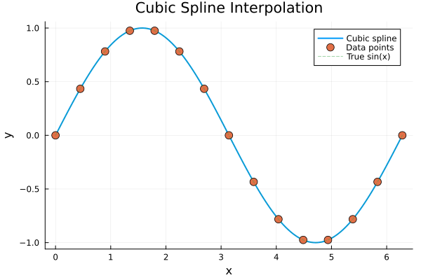

Cubic Spline Interpolation
Cubic spline interpolation creates smooth curves (C² continuous) that pass through all data points. Unlike linear interpolation, cubic splines have continuous first and second derivatives.
Basic Usage
using FastInterpolations
using Plots
# Sample data (Range works directly - most performant)
x = range(0.0, 2π, 15)
y = sin.(x)
# Interpolate at a single point
result = cubic_interp(x, y, 1.5)
println("cubic_interp(x, y, 1.5) = ", round(result, digits=6))cubic_interp(x, y, 1.5) = 0.997404# Interpolate at multiple points (Range for query points too)
xq = range(0.0, 2π, 200)
yq = cubic_interp(x, y, xq)
plot(xq, yq, label="Cubic spline", linewidth=2)
scatter!(x, y, label="Data points", markersize=6)
plot!(xq, sin.(xq), label="True sin(x)", linestyle=:dash, alpha=0.5)
title!("Cubic Spline Interpolation")
xlabel!("x")
ylabel!("y")
Two Categories of Boundary Conditions
Cubic splines require boundary conditions at the endpoints. FastInterpolations.jl provides two main categories:
1. Standard Boundary Conditions
For non-periodic data where endpoints are distinct:
| Type | Description | Use Case |
|---|---|---|
NaturalBC() | Zero curvature at ends (default) | General purpose, no prior knowledge |
ClampedBC() | Zero slope at ends | Data with flat endpoints |
Deriv1(val) | Specified first derivative | Known endpoint slopes |
Deriv2(val) | Specified second derivative | Known endpoint curvatures |
BCPair(left, right) | Different conditions at each end | Asymmetric constraints |
2. Periodic Boundary Condition
For cyclic/periodic data where the curve should wrap smoothly:
| Type | Description | Use Case |
|---|---|---|
PeriodicBC() | Smooth wrap-around | Angles, phases, time-of-day |
Quick Decision Guide
Is your data periodic/cyclic?
│
├─ YES → Use PeriodicBC()
│ (angles, phases, circular data)
│
└─ NO → Use Standard BC
│
├─ No prior knowledge? → NaturalBC() (default)
├─ Flat endpoints? → ClampedBC()
└─ Known derivatives? → Deriv1/Deriv2 + BCPairIn-Place Interpolation
For maximum performance, use the in-place version:
out = zeros(5)
xq_small = [0.5, 1.0, 1.5, 2.0, 2.5]
cubic_interp!(out, x, y, xq_small)
println("Results: ", round.(out, digits=4))Results: [0.4794, 0.8414, 0.9974, 0.9092, 0.5984]Reusable Interpolant
When both x and y are fixed:
# Create interpolant once (pre-computes coefficients)
itp = cubic_interp(x, y)
# Evaluate multiple times (zero-allocation)
println("itp(1.0) = ", round(itp(1.0), digits=4))
println("itp(2.0) = ", round(itp(2.0), digits=4))
println("itp(3.0) = ", round(itp(3.0), digits=4))itp(1.0) = 0.8414
itp(2.0) = 0.9092
itp(3.0) = 0.1411Next Steps
- Standard BC: Learn about NaturalBC, ClampedBC, and custom constraints
- Periodic BC: Handle cyclic data with smooth wrap-around
- Extrapolation: Control behavior outside the data domain
- Architecture Overview: Understand zero-allocation and caching